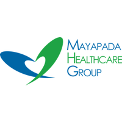
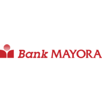
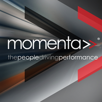
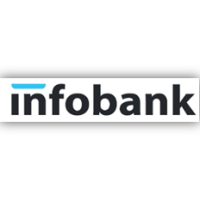
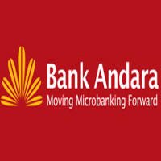
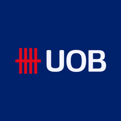

General Manager Human Capital
Mayapada Healthcare Group
2020 – Present
• Ensured that the process needed for the quality management
system are implemented and maintained in the hospital
• Planned, organized and managed all medical services of the
hospital
• Worked in close collaboration with clinical & non-Clinical
functions to ensure delivery of good Healthcare services
• Overseed all training and continuing education for staff

Human Capital Division Head
Bank Mayora
2017 – 2020
• Built Learning organization and business support
• Developed HR life cycle
• Directed Operation and service, Learning & Development, Talent
Management
• Accelerated Remuneration and Nomination Committee

Trainer & Advisory Consultant
Momenta Indonesia
2015 – 2017
Principal Consultant MOMENTA,
Consultant Sentul International Convention Center (SICC)
Clients/users:
1. Bank Mandiri, Commonwealth Bank, Bank Victoria, Bank Permata,
CIMB Niaga, ICBC, Mitsubishi OFJ, Bank Sulut, Bank Jateng, Bank
Kalbar, BPR Sukabumi, BPR Bandung, BPR Cianjur, Bussan Auto
Finance, Hero-Giants, Generali Insurance, Bank DBS, Citibank, UOB
Indonesia
2. Seskoal, PTIK/STIK, Pusdiklat Kejaksaan, Sekolah Tinggi
Transportasi Darat, Sekolah Tinggi Penerbangan Indonesia,
Universitas Pertahanan Indonesia, Universitas Ciputra Surabaya,
Binus University, ITB, UPI

Managing Director
Infobank Learning Center
2013 – 2015
• Directed strategy towards the profitable growth and operation of
the company that reflect the longer-term objectives and priorities
• Maintained the operational performance of the company
• Monitored the actions of the functional board directors and
operating and financial results
• Built and maintaining an effective executive team.

Head of Human Resources, Vice President (VP)
Bank Andara
2012 – 2013
• Headed human capital and knowledge management
the company that reflect the longer-term objectives and priorities
• Implemented Human Resources Information System (HRIS)
• Established proper HR policy and procedure
• Led all compliance, audit and risk related to HR

Assistant Vice President HR
UOB Indonesia
2007 – 2012
• Headed human capital and knowledge management
the company that reflect the longer-term objectives and priorities
• Developed learning and service Training
• Created Knowledge Management Project
• Headed Learning Center at UOB Plaza and UOB Harmoni
 HR Credit Operation
HR Credit Operation
Citibank Indonesia
1995 – 2007
• Developed evergreen program to improve and utilize potential
senior
the company that reflect the longer-term objectives and priorities
• Designed train for the trainer for customer services
• Enhanced Lead Management Associate Development Program for
Credit Operation
• Coordinated employee activities and motivational program